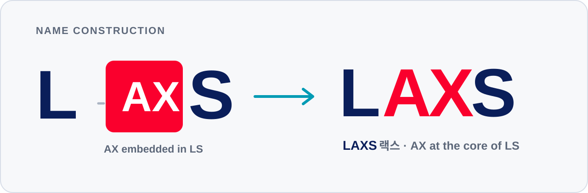
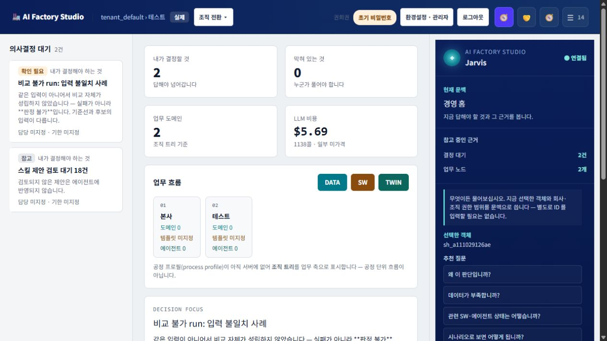
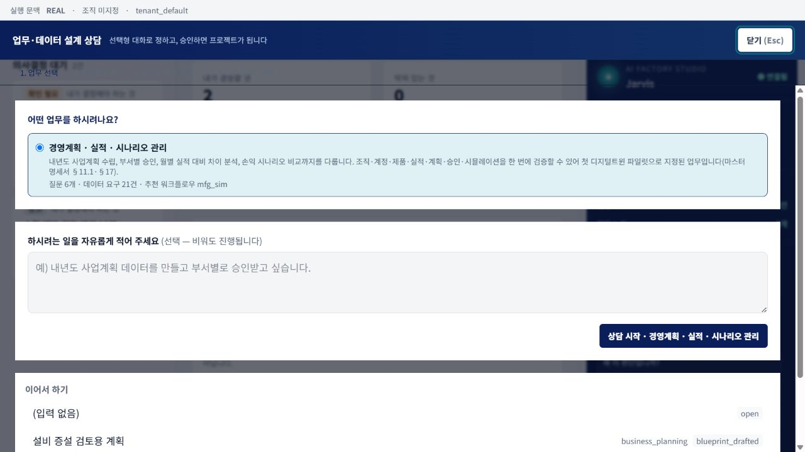
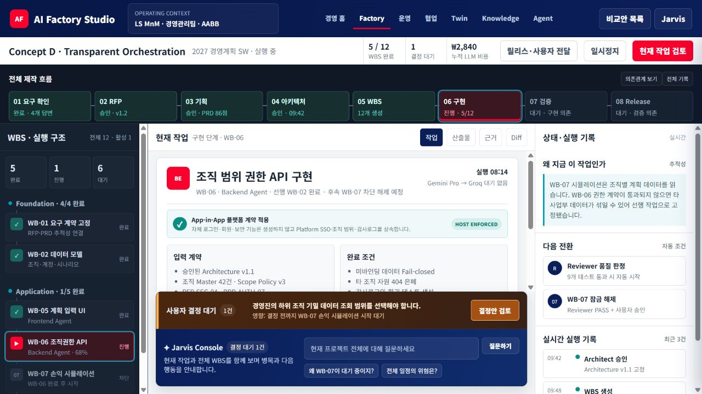
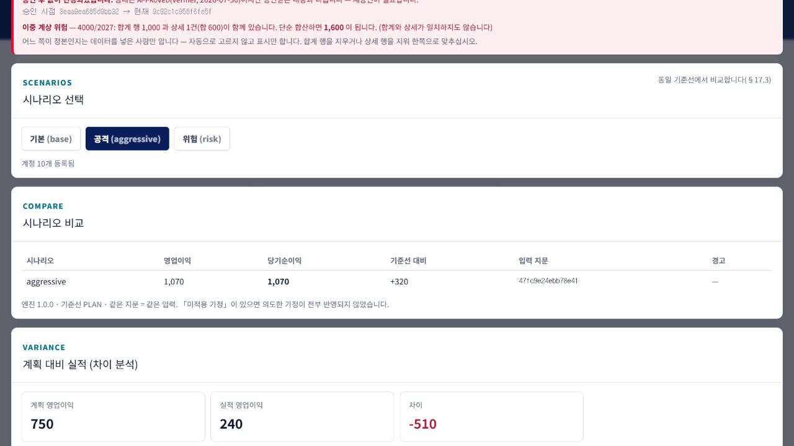
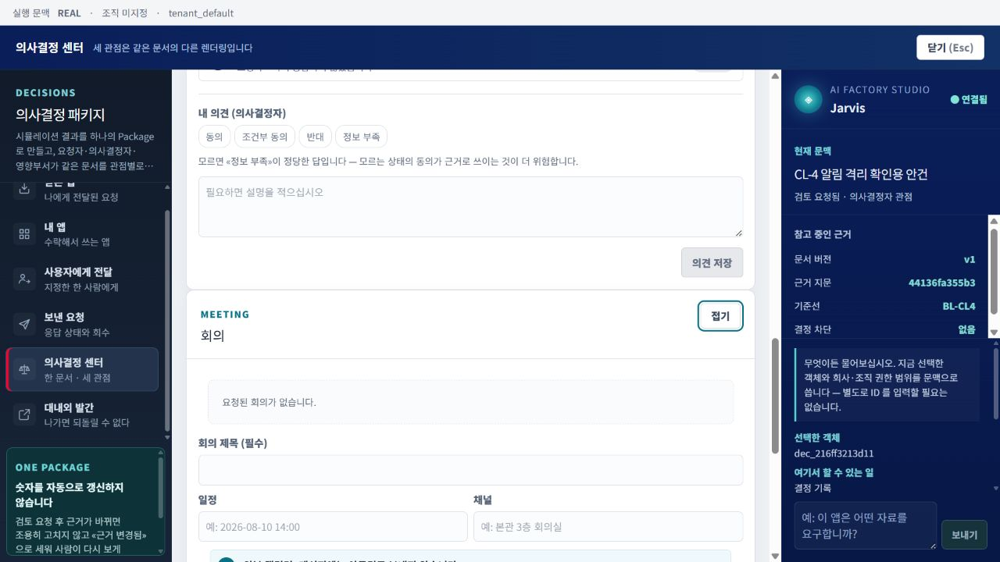

LS MnM AX 전략 및 실행체계 제안
현업의 실행과 경영의 판단을
하나의 AX 흐름으로 연결합니다.
LAXS-M은 회사 데이터와 업무지식을 기반으로 현업 업무, 경영 시뮬레이션, 의사결정과 효과 검증을 연결하는 LS MnM의 첫 적용안입니다.
LS 안에 AX를 심고, 현업과 경영을 연결합니다.
LAXS는 AX를 별도 기능으로 덧붙이는 것이 아니라 LS의 일하는 방식과 경영체계 안에 내재화하겠다는 이름입니다.

왜 지금 LAXS-M이며, 무엇을 먼저 결정해야 하는가
LAXS-M은 새로운 챗봇을 추가하는 제안이 아닙니다. 기존 ERP·MES·LPL의 책임은 유지하면서, 회사 데이터와 업무지식을 공통 문맥으로 연결하고 현업의 실행 결과가 경영 시뮬레이션·의사결정·효과 검증으로 이어지게 하는 운영체계 제안입니다.
현재 접근에서 남는 구조적 공백
개별 AI 도구는 문서 작성과 검색을 빠르게 하지만 수주·생산·원가 같은 경영 데이터 및 승인 흐름과 분리되기 쉽습니다. 성과와 업무지식도 과제 단위로 흩어집니다.
프로젝트형 SI는 정해진 범위를 구현하는 데 효과적이지만, 요구 변화 때마다 재설명과 계약 변경이 필요합니다. 시스템 수정 속도와 현업의 변화 속도 사이에 간극이 생깁니다.
LAXS-M이 제안하는 전환
현업이 회사의 권한·데이터 계약·업무표준을 상속한 업무 기능을 만들고, 승인된 데이터와 산식으로 대안을 비교하며, 결정과 실제 결과를 다음 업무에 재사용할 수 있게 합니다.
이번 의사결정의 범위
① 첫 Closed Loop 적용업무 확정 ② 제품 책임자와 Power User 지정 ③ 보안 범위 내 데이터 제공 원칙 승인 ④ 실사용·재사용·경영효과를 기준으로 한 단계별 Gate 운영입니다.
현재 문서는 목표 효과를 확정 실적으로 주장하지 않습니다. 파일럿 전후의 리드타임·재작업·데이터 품질·의사결정 시간·재무 효과를 같은 기준으로 측정해 다음 단계 여부를 결정합니다.
LAXS-M의 5대 차별화 역량과 6대 설계 원칙
1. LAXS-M의 5대 설계 차별성
범용 AI만으로는 회사별 조직·권한·업무 용어·데이터 판·승인 규칙을 일관되게 적용하기 어렵습니다. LAXS-M은 기업 문맥, 데이터 통제와 검증 가능한 계산을 제품 구조에 포함합니다.
- ① 기업 데이터·지식 주권 확보 (Data Sovereignty): MDM, 데이터 카탈로그, 권한 체계와 용어 사전을 회사가 직접 통제합니다. 부서와 Agent가 승인된 의미체계를 공유하고, 출처와 문맥을 확인할 수 없는 요청은 명시적으로 차단합니다.
- ② 현업 담당자의 업무 SW 직접 생성 (Software by Business Users): Power User가 업무 의도와 기준을 설명하면 AI Agent가 기획·설계·구현·검증을 지원합니다. 결과물은 플랫폼 인증·조직·데이터 정책을 상속한 App-in-App으로 검토·배포합니다.
- ③ 의사결정 전 경영 시나리오 검증: 환율·에너지비·수요 같은 가정을 승인된 입력·산식·버전에 결속해 비교합니다. AI는 숫자를 임의 생성하지 않고 계산 결과의 의미와 근거를 설명합니다.
- ④ Decision Closed Loop (의사결정 선순환 구조): 시나리오, 승인·결정, 실행과 실제 효과를 하나의 이력으로 연결합니다. 결과는 자동 학습시키는 것이 아니라 검토·승인된 지식과 기준선으로 축적해 다음 분석의 품질을 높입니다.
- ⑤ Private RAG 및 멀티 모델 비용 통제 (Cost Optimization): 원본 데이터는 내부 통제영역에 두고, 권한과 목적에 맞는 최소 문맥만 기업용 모델 호출에 사용합니다. 작업 난이도와 보안등급에 따라 모델을 선택하고 비용·품질을 함께 관측합니다.
2. 플랫폼을 지탱하는 6대 전략 기둥 (Strategic Pillars)
1. 데이터 주권 (Context)
전사 지배구조, 사용자 조직, 용어 체계 등을 내재화하여 AI가 회사의 뼈대를 정확히 이해하도록 설계된 근본 인프라.
2. 현업 생산성 (SW Factory)
복잡한 코딩 없이 기획 의도만으로 현업이 직접 데이터 조회 뷰와 워크플로우를 생성하는 민첩성의 핵심.
3. 경영 Twin (Twin Engine)
단순 집계를 넘어, 가정을 바꾸면 손익이 어떻게 변하는지 인과관계를 추적하는 샌드박스 기반 시뮬레이터.
4. Agent OS (Agent Model)
업무별 AI Agent가 역할에 따라 협업하고, AI 경영비서가 진행 설명과 품질·보안 통제를 지원합니다.
5. 판단 루프 (Closed Loop)
판단의 근거(시나리오)와 결과(실행)를 끊기지 않게 연결하여 회사의 판단 지능을 영구적 자산으로 남기는 구조.
6. 지식 통합 (Integration)
부서별 데이터와 지식을 공통 기준·권한·승인 절차로 연결해 재사용 범위를 단계적으로 넓히는 아키텍처.
8대 핵심 모듈 기능 정의 및 Zero-Risk 의사결정 샌드박스 메커니즘
1. LAXS-M 8대 코어 모듈 (Core Modules)
시스템은 8개 핵심 모듈로 구성됩니다. 각 모듈은 독립된 책임을 가지며, 공통 조직·권한·데이터 계약과 감사 이력을 통해 현업 업무에서 경영 의사결정까지 연결됩니다.
| 모듈 명칭 | 상세 기능 및 작동 원리 해설 |
|---|---|
| 01. 기업 문맥·권한 | 지주사, 법인, 사업부, 공장 단위의 물리적/가상적 조직 구조와 권한 체계를 통합 통제하는 최상위 모듈입니다. 데이터 접근의 보안 등급을 설정합니다. |
| 02. 데이터·지식 관리 | 분산된 데이터 소스를 논리적으로 연결하고, MDM과 Graph RAG 기술을 통해 데이터의 출처(Lineage)와 의미를 AI가 이해할 수 있는 지식망으로 구성합니다. |
| 03. 현업 SW 생성 | 사용자가 자연어로 요구사항을 입력하면 Agent가 요구 명확화, 기획, WBS, UI/API 구현과 검증을 지원합니다. 결과물은 계약 검토와 승인 Gate를 통과한 뒤 실행됩니다. |
| 04. 앱 협업·전달 | 부서 간에 개발된 앱을 안전하게 전달하고 권한을 상속하며, 하나의 업무가 다른 부서의 업무로 부드럽게 이어지도록 워크플로우를 연결하는 네트워크 기능입니다. |
| 05. 경영 시뮬레이션 | Actual(실적), Plan(계획), Forecast(예측), Scenario(가상) 데이터를 기반으로 한 결정론적 손익/현금 연쇄 계산 엔진으로 미래 영향을 수치화합니다. |
| 06. AI 에이전트 운영 | 수행할 업무별 특화 Agent와 Skill을 정의하고 조립하며, 난이도에 따라 LLM 모델을 경제적으로 분배 라우팅하여 API 호출 비용을 엄격히 통제합니다. |
| 07. AI 경영비서 | 사용자와 플랫폼 간의 메인 인터페이스입니다. 전사적 질의에 답변하고, 작업의 진행 상황을 설명하며, 보안 위반이나 이상 징후 시 직접 개입하여 거버넌스를 통제합니다. |
| 08. 의사결정·보고 | 시뮬레이션과 분석 결과를 경영진 보고용 패키지(검토서, 회의 요청, 실행 과제)로 자동 포맷팅하여 최종 의사결정을 지원하는 출력(Output) 층입니다. |
2. 가상 회사 기반 신사업 및 경쟁사 방어 시뮬레이션 (Sandbox)
왜 샌드박스 시뮬레이션이 필수적인가?
신규 해외 공장, 대규모 설비 투자, M&A 같은 의사결정은 불확실성과 회수기간이 큽니다. 실제 자원을 투입하기 전에 운영 실적과 격리된 가상회사(Virtual Entity)에서 가정과 민감도를 비교하도록 설계합니다.
LAXS-M은 MANAGEMENT TWIN과 ENTERPRISE CONTEXT 모듈을 결합하여 가상 회사(Virtual Company)를 생성할 수 있습니다. 예를 들어, "인도네시아 신규 공장 가상 법인"을 시스템 내에 만들고, 여기에 현지 인건비, 예상 원자재 물류비, 건설 CAPEX를 입력합니다. 엔진은 당사의 기존 산식을 적용하여 투자 3년 차의 BEP(손익분기점) 도달 여부와 현금 소요량을 경영진에게 정밀하게 사전 제시합니다.
경쟁사 대응 시나리오에도 활용할 수 있습니다. 가격 인하와 점유율 변화 가정을 입력하고, 승인된 원가·수요 모델이 준비된 범위에서 대응 단가와 필요한 원가 개선폭을 비교합니다.
레거시 교체 없는 데이터 통합 원칙 및 실무/경영 적용 시나리오
1. 기존 시스템(ERP/MES) 교체 없는 데이터 통합 3대 원칙
초대형 IT 프로젝트들의 실패 원인은 기존 시스템(ERP, MES 등)을 강제로 교체하거나 전면 재구축하려 했기 때문입니다. 본 플랫폼은 기존의 시스템을 System of Record(원본 기록 시스템)로 온전히 존중하며, 무리한 교체 없이 '연결'에 집중하는 3대 연동 원칙을 준수합니다.
- ① System of Record 유지보존: ERP에서의 재무 전표, MES에서의 현장 생산 실적 등 원천 데이터 발생 위치는 그대로 유지합니다. 플랫폼은 의사결정에 필요한 데이터만을 선택적으로 복제하거나 가상으로 참조(Federation)하여 분석합니다.
- ② 목적 기반의 논리적 통합 계층 운용: 무작정 방대한 데이터를 한 곳에 복제하는 Data Lake 방식의 맹점을 피합니다. 데이터의 보안 등급(사내 기밀 등)과 필요 빈도에 따라 실시간 API 연결, 배치 복제, 가상 뷰(Virtual View) 조회를 유연하게 섞어 쓰는 논리적 아키텍처를 적용합니다.
- ③ 외부 참여자 포털 분리 (Direct Access 금지): 운송사, 협력업체, 통관사 등 외부 참여자는 기존 공급망 포털(LPL)을 통해서만 접근하도록 통제하고, 경영 의사결정 플랫폼과의 경계 및 접근통제를 유지합니다.
2. 8대 비즈니스 경영 문제 영역의 패러다임 전환 (To-Be Transformation)
데이터가 통합된 플랫폼 위에서 회사의 8대 핵심 업무 영역을 개별 부서의 파편화된 업무에서 '인과관계가 연결된 시뮬레이션망'으로 단계적으로 확장합니다.
실무 영역 (Value Chain)
- 수주/판매: 고객 발주 시 현재 창고 재고뿐만 아니라 생산 중인 물량의 납기 가능성까지 연산하여 지연 위약금 리스크를 조기 차단.
- 구매/원료: 글로벌 원자재 가격 변동과 도착 일정을 생산 스케줄에 즉각 연동하여 최적의 대량 발주 타이밍 제시.
- 생산/설비: 특정 공정의 설비 고장 가정이 납기 차질 물량과 원가에 미치는 영향을 승인된 모델 범위에서 재계산.
- 물류/재고: 선박 도착 지연(ETA 변동) 시 생산 중단(Line-stop) 위기를 방지하기 위한 대체 조달 시나리오 자동 제안.
- 품질/추적: 불량 발생 시 해당 원료가 투입된 모든 제품과 출하 고객을 역추적하여 잠재적 배상 손실액 신속 산정.
경영 의사결정 영역 (C-Level Scenario Test)
경영진은 월보 중심의 사후 확인을 보완하고, 주요 가정 변화가 손익과 실행계획에 미치는 영향을 동일 기준으로 비교할 수 있습니다.
- 재무/현금 시나리오: "원달러 환율이 5% 급등할 경우, 당월 영업이익 감소분과 긴급히 필요한 현금 소요량(Working Capital)은 얼마인가?"
- 경영계획 시나리오: "전기료가 10% 인상될 경우, 공정별 에너지 집약도에 따른 제품별 한계이익 변화 및 판매 전략 수정안 도출"
- 전사 의사결정: 시나리오별 근거를 검토서로 구성하고, 승인된 대안을 담당자·기한·성과지표가 있는 실행 과제로 연결.
1호 Closed Loop 실증 범위와 ROI 검증 체계
1. 권고 1호 과제: 원료 수급 ~ 손익 연계 Closed Loop
첫 검증은 화면 시연이나 단순 조회로 끝내지 않습니다. 부서 간 데이터가 실제 경영지표까지 연결되고, 검토·결정·실행·효과 측정으로 돌아오는 하나의 Closed Loop를 파일럿의 완료 조건으로 삼습니다.
실행 단계 (4 Step Pipeline)
- Step 1. 환경 구성: 도입계획, 입항일정, 재고, 환율 등 기초 데이터를 연결하여 시스템에 등록 (Data Context 확립).
- Step 2. 현업 앱 공동 생성: 구매 실무자가 업무 기준을 설명하고 Agent의 지원으로 도입 물량 추적 앱을 설계·검증해 실무 주기에 적용.
- Step 3. 경영 시나리오 연쇄: 구매된 물량이 물류 지연을 겪을 경우 생산 라인 가동률과 재고 평가에 미치는 영향을 Twin 엔진으로 연결.
- Step 4. 실행 및 효과 검증: 대안 채택 후 실제 입항 결과와 예측치의 차이를 분석하고, 검토·승인된 보정만 다음 기준선과 지식에 반영.
파일럿 전후 비교 기준
현행 프로세스의 자료 취합시간, 재작업 횟수, 승인대기, 오류와 분석 소요시간을 먼저 기준선으로 측정합니다.
적용 후 동일 업무를 같은 조건으로 반복해 리드타임·오류·재사용률·경영 판단시간을 비교합니다.
목표치는 사전에 합의하되, 성과 수치는 파일럿 실측 후 확정합니다.
2. 경영 플랫폼 도입에 따른 정량적 / 정성적 재무 가치 (ROI)
업무 효율뿐 아니라 재고·체선료·조달 차질·운전자본에 미치는 영향을 기준선 대비로 측정합니다. 효과가 확인되지 않으면 다음 단계 투자를 확대하지 않습니다.
| 분류 | 기대 효과 항목 | 상세 재무 가치 기전 (Mechanism of Value) |
|---|---|---|
| 정량적 재무 절감 (Quantified Value) |
체선료 및 보관료 감축 | 물류 일정과 하역계획을 연결하여 체선·보관 발생 건수와 비용의 기준선 대비 변화를 측정합니다. |
| 과잉 안전재고 축소 | 생산 투입계획과 공급 변동을 함께 비교해 서비스 수준을 유지하면서 조정 가능한 안전재고 범위를 검토합니다. | |
| 수작업 인건비 절감 | 부서 간 엑셀 취합·이중 입력·재작업 시간을 측정하고 계약 기반 데이터 연계 후의 공수와 비교합니다. | |
| 정성적 전략 자산 (Strategic Value) |
적기 조달 리스크 헷지 | 지연 경보와 대체 조달 시나리오를 통해 생산 차질 가능성과 대응 리드타임이 어떻게 달라지는지 추적합니다. |
| 전사 지식의 영구 자산화 | 의사결정 근거·업무 기준·앱 버전을 회사 자산으로 남겨 특정 개인 의존도를 낮추고 재사용 가능성을 높입니다. |
실행 거버넌스, IT 파트너십과 단계별 확산 조건
1. 전사 TF 구성 및 그룹 ITO 계열사와의 상생 역할 분담
방대한 혁신 조직을 새로 꾸리는 것이 아니라 기동성 있는 소수정예 TF로 시작합니다. 전체 제품 로드맵을 지휘할 AX & Product Lead (제안자, 1명)와 각 현업 부서를 대표하여 실무 지식을 이식할 Power User (3~4명)가 Core Team을 구성합니다. 보안 및 IT 부서는 이슈가 발생할 때 판단을 내리는 On-Demand 형태로 후방 지원합니다.
기존 전산 부서와 그룹 ITO의 책임을 존중하면서 역할 경계를 명확히 합니다. 제품팀은 코어 아키텍처·로드맵·보안 기준을 책임하고, IT·ITO 파트너는 현장 구축, 레거시 연계, 운영지원과 고객별 설정을 담당하는 방안을 검토합니다. IP·라이선스·SLA는 파일럿 성과와 확산 방식이 확인된 뒤 계약으로 확정합니다.
2. 제품 전담조직의 단계별 대안
초기에는 사내 TF로 실행력을 확보하되, 그룹 확산·IP 운영·전담 R&D 필요성이 확인되면 조직 독립 수준을 재검토합니다. 독립 법인은 전제가 아니라 실사용·재사용·경제성 증거에 따라 선택할 대안입니다.
- 옵션 A · 사내 TF: 초기 파일럿과 제품 검증에 적합합니다. 다만 장기적으로 전담성·중립성·예산 책임이 약해질 수 있습니다.
- 옵션 B · 사내벤처: 기존 자원을 활용하면서 별도 성과책임과 제품 운영모델을 시험할 수 있습니다. 그룹 확산 전환점의 우선 검토안입니다.
- 옵션 C · 독립 법인: 반복 도입, 외부 매출, IP·SLA 운영 필요성이 확인된 뒤 검토합니다. 지분·기술료 효과는 사업계획과 계약 협의 결과로 판단합니다.
3. 단계별 성과 기반 스케일업 로드맵 (5 Phase Stage-Gates)
일정 경과만으로 다음 단계에 진입하지 않습니다. 각 단계의 실사용·재사용·보안·경제성 근거가 합의된 Gate를 충족할 때만 범위와 자원을 확대합니다.
| 진행 단계 | 주요 수행 목적 및 활동 | 다음 단계 진입을 위한 필수 통과 기준 (Stage-Gate Criteria) |
|---|---|---|
| Phase 0. 내부 설계 |
조직 구성 및 첫 대상 과제 확정 | Gate 0 통과: 결정권자 임원 배정 및 1호 루프 적용 과제 정의서 승인 완료 시 |
| Phase 1. 당사 실증 |
실데이터 기반 운영 파일럿 가동 | Gate 1 통과: 당사 내 부서간 1호 수직 파이프라인(Closed Loop) 실가동 성공 및 승인 완료 시 |
| Phase 2. 그룹 확산 |
코어 모듈화 및 계열사 수평 확산 전개 | Gate 2 통과: 당사 외 최소 1개 이상 타 그룹 계열사에서 플랫폼 코어 재사용 도입 확인 시 |
| Phase 3. 조직 독립 |
사내벤처 스핀아웃 및 정식 IP/파트너십 이관 | Gate 3 통과: 신설 독립 법인과 계열사/ITO 파트너 간 공식 라이선스 및 SLA 계약 체결 시 |
| Phase 4. 대외 B2B |
그룹 외부 일반 제조기업 대상 SaaS 판매 | Gate 4 통과: 그룹과 무관한 외부 제조기업 대상으로 플랫폼의 반복 판매(매출) 발생 시 |
경영진 의사결정 요청 6대 안건
이번 단계에서는 대규모 확산이나 독립법인을 확정하지 않습니다. 1호 파일럿을 책임 있게 실행하고, 다음 단계 판단에 필요한 증거를 확보하기 위해 아래 6개 안건의 결정을 요청드립니다.
1 전사 AX 전략 방향성 확정
기업 데이터·지식 기반의 현업 SW 생산, 사전 경영 시나리오 검증과 Decision Closed Loop를 AX 전략의 실행 방향으로 채택합니다.
2 공식 실행 플랫폼 지정
현재 구축 중인 LAXS-M을 1호 파일럿의 공식 실행 플랫폼으로 지정하고, 전사 표준화 여부는 Gate 결과로 재결정합니다.
3 리더십 및 실무 TF 조직 구성 승인
제안자를 본 프로젝트와 제품 로드맵을 총괄하는 'AX & Product Lead'로 임명하고, 선발된 구매/생산/물류/재무 실무자 3~4인으로 구성된 '전사 AX Core Team(TF)'의 가동을 승인합니다.
4 현업 부서 대상 Top-Down 협조 지시
TF에 차출된 Power User들이 본 업무에 매진할 수 있도록 주당 공식 업무 시간을 배정(주 8~10시간)하고, 플랫폼 검증에 필수적인 각 부서의 원천 데이터와 보안 접근 권한을 우선적으로 제공할 것을 지시합니다.
5 점진적 예산 집행 승인 (Stage-Gated)
초기 실증(Phase 1) 단계는 기존 사내 인프라 자원을 최우선 활용하여 초기 투자 비용을 최소화하며, 이후 클라우드 비용이나 추가 컴퓨팅 자원 필요 시 정해진 Gate 통과 결과(성과 증빙)를 기반으로 단계적으로 승인 집행합니다.
6 그룹 확산 및 사내벤처 스핀아웃 병행 설계
1호 파일럿의 실사용·재사용·경제성 근거를 바탕으로 그룹 확산과 사내벤처 전환 조건을 검토하되, 조직 분리는 별도 의사결정 안건으로 상정합니다.
이번 승인의 목적은 큰 구호를 확정하는 것이 아니라,
첫 업무에서 측정 가능한 결과를 만들고 다음 투자의 근거를 확보하는 것입니다.
경영 현황과 업무 설계 상담 구현 화면
아래 이미지는 문서용 목업이 아니라 현재 제품에서 캡처한 구현 화면입니다.


현업 SW 생성과 프로젝트 실행 통제 화면


경영 시나리오 분석과 의사결정 실행 화면

